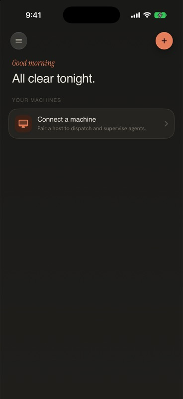
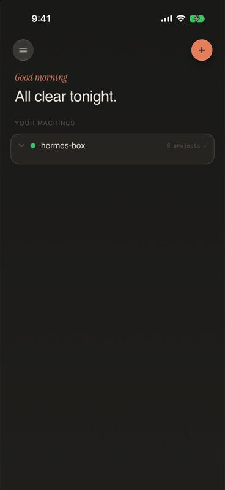
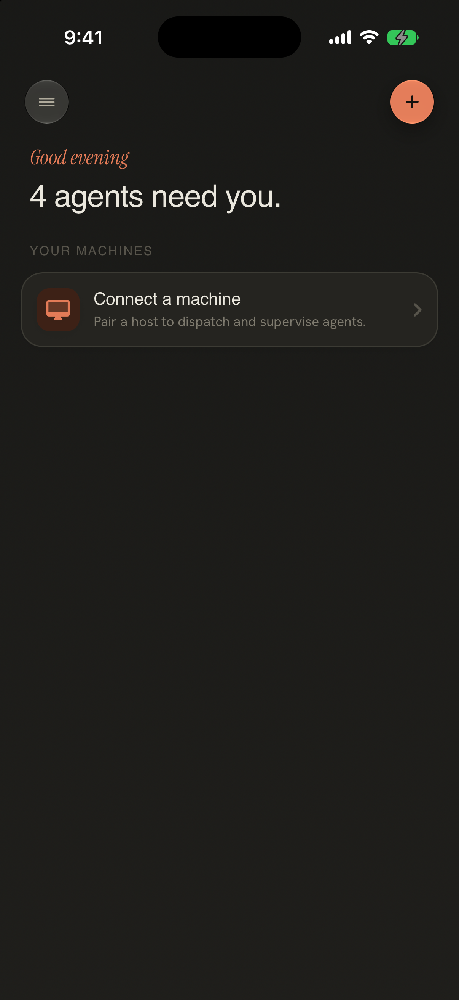
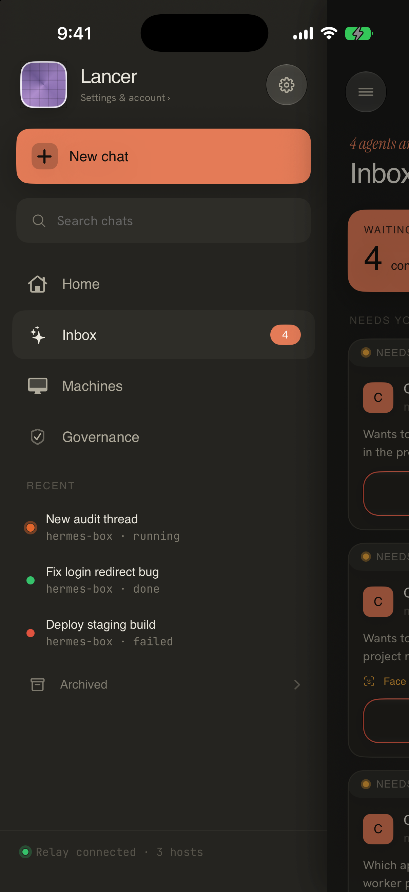
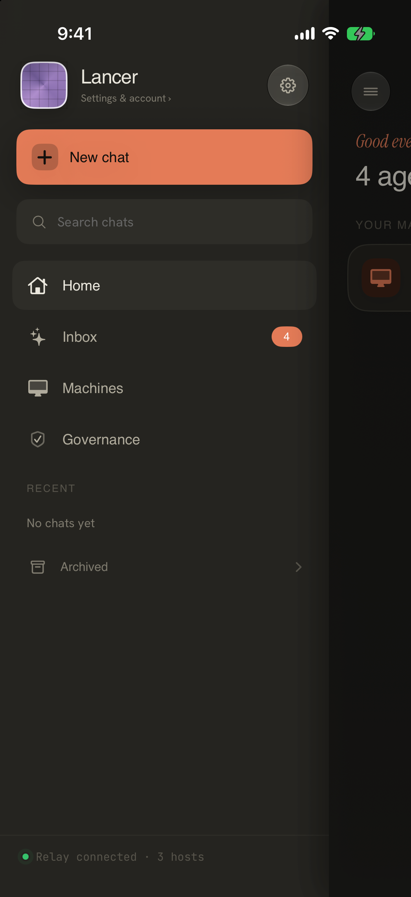
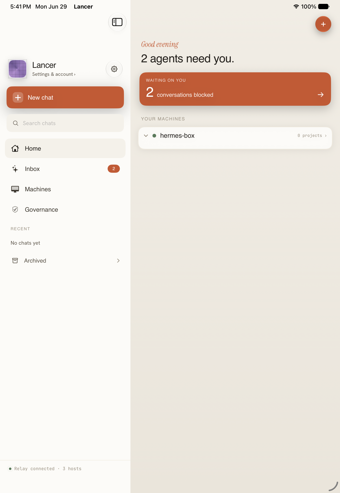

What we have now
Freshly captured 2026-07-01, iPhone 17 Pro simulator, dark mode, dev build. The app was uninstalled and rebuilt before capture 1 to guarantee a genuinely empty/fresh state.

Fresh install, LANCER_DESTINATION=sessions, no reseed, no relay. Headline
"All clear tonight." + connectMachineCard ("Connect a machine") only.

Same state + LANCER_UITEST_RESEED=1. This is the important empirical
finding — see callout below.

+ LANCER_FAKE_RELAY_HOST=hermes-box. Machine tree renders (green dot,
"hermes-box", project count), headline still "All clear tonight."
-
Split-brain attention is fixed.
AppRoot.swiftlines 639–652 feedhudStore.pendingApprovals,sidebarState.pendingApprovalCount, and the Live Activity badge all from the singlefleetStore.attentionItems.count. Empirically: the stale doc screenshot (home-command_pending-headline_iphone-17-pro_dark.png, below) shows the old bug — headline "4 agents need you" with no NEEDS ATTENTION cards on Home. Our fresh capture #2 above, using the sameLANCER_UITEST_RESEED=1recipe against current code, shows "All clear tonight." instead — becauseFleetStore.attentionItems(FleetStore.swiftline 152) only projects from live fleet slots, and reseed only seeds the local approval repo, not a fleet slot. The headline and the (absent) card list now agree — no more disagreement, in either direction. -
Hardcoded sidebar footer is fixed.
LancerSidebarView.footerText(lines 303–310) now branches onstate.relayConnectedandstate.fleetSlotCount— no more fixed "Relay connected · 3 hosts" (visible as the old bug inapproval-inbox_seeded-pending_iphone-17-pro_dark.pngbelow). -
Governance is folded into Settings — no longer a competing 4th sidebar
root (confirmed absent in current
primaryNavigation, lines 185–211).
- Attention card is missing agent name + relative age (row anatomy, item 1 in scope).
- All-clear is text + an existing empty/paired machine card, no calm confirmation module (item 2 in scope).
- Inbox is still a 3rd primary sidebar root with its own badge, duplicating Home's "See all" path (item 3 in scope).
-
New limitation surfaced by this pass, not the original doc: because the
split-brain fix now makes
attentionItemsthe sole source of truth, and it only derives from live fleet slots, there is currently no simulator-only way to screenshot a populated NEEDS ATTENTION card list on Home — it requires an actual live SSH or relay session with pending approvals in that slot's inbox, not just repo-seeded data. The original audit doc hit the same wall (its "Required States" table marks this row "No" too). We used the existing Inbox row capture as the closest anatomy reference instead — seeapproval-inbox_seeded-pending_iphone-17-pro_dark.png.
Reference captures (old doc screenshots, copied here for a dependency-free report)

Old capture — split-brain bug ("4 agents need you", no cards). Now fixed.

Inbox row anatomy reference (see Proposed Changes §1) + old hardcoded footer / Governance root, both now fixed.

Sidebar drawer, current-ish (footer text will differ from live state).

iPad split view — structure reference only, not refreshed this pass.